보고서 작성¶
공통 UI¶
다수의 객체에서 공통으로 사용되는 기능에 관해 설명합니다.
데이터 탭(공통)¶
데이터 유형 설정(공통)¶
사용하고자 하는 데이터 유형을 설정합니다.
데이터 유형 종류
| 데이터 유형 | 설명 |
|---|---|
| 데이터 모델 | DB의 데이터를 추상화한 데이터 묶음으로서 별도의 테이블처럼 사용할 수 있습니다. |
| DSMS | Data Source Manager Service, 다양한 데이터에 대한 접근을 제공합니다. |
| SMS | System Monitoring Service, 시스템 자원 현황에 대한 정보를 제공합니다. |
| REST API | 데이터를 REST 형식으로 사용할 수 있게 합니다. |
객체에 따라 특정 데이터 유형은 지원하지 않을 수도 있습니다.

데이터 유형별 선택옵션
| 데이터 유형 | 선택옵션 |
|---|---|
| 데이터 모델 | 데이터모델, 시간 설정, 검색어 |
| DSMS | 연결정보, 검색어 |
| SMS | Metric 유형 설정 |
| REST API | Restful API 선택 |

연결정보¶
Metric 유형 설정¶
| API Type | 선택사항 | 추가 선택사항 |
|---|---|---|
| current | server, switch | |
| resource | resource | 시간 설정, 대상 Agent |
| alarm/history | Equipment, Metric | 시간 설정, 대상 Agent |
current 를 선택한 경우

resource 를 선택한 경우

alarm/history 를 선택한 경우


대상 Agent¶
Agent 선택

사용자 정의 Agent 선택

검색어¶
검색어 입력
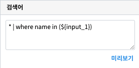검색어 미리보기
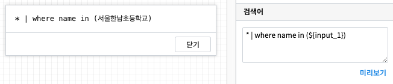전체 변수명 보기
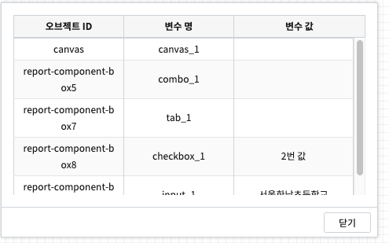Restful API¶
사용자 정의 탭¶
| 옵션 명 | 설명 |
|---|---|
| 이름 또는 항목 | 화면에 표시되는 이름입니다. |
| 값 | 해당 항목에 대한 값으로 따로 지정하지 않을 경우 해당 항목의 이름을 사용합니다. |
사용자 정의 항목 UI
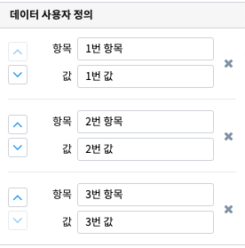

이벤트 값 전달 설정(공통)¶
해당 객체의 값을 참조하고자 할 때 사용하는 내용이 표시됩니다.
| 옵션 명 | 설명 |
|---|---|
| 오브젝트 ID | 해당 객체의 고유 아이디로 자동으로 할당됩니다. |
| 변수 명 | 해당 객체를 사용하기 위한 변수명으로 사용자가 지정할 수 있습니다. |

트리거 설정(공통)¶
다른 객체로부터 이벤트를 수신하거나 해당 객체의 이벤트를 수신하는 객체를 확인할 수 있습니다.


객체 설정(공통)¶

서식 설정¶
라벨(Label) 일 때 서식설정
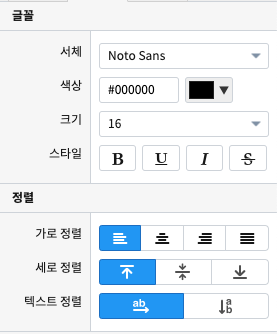| 옵션 명 | 설명 |
|---|---|
| 글꼴/서체 | 글꼴을 선택합니다. |
| 색상 | 글꼴의 색상을 선택합니다. |
| 크기 | 글꼴의 크기를 선택합니다. |
| 스타일 | 글꼴의 스타일을 선택합니다. (굵게, 밑줄, 이탤릭체, 취소선) |
| 가로 정렬 | 글자의 가로 정렬을 선택합니다. (없음, 가운데, 왼쪽, 혼합) |
| 세로 정렬 | 글자의 세로 정렬을 선택합니다. (위, 중간, 아래) |
| 텍스트 정렬 | 글자의 방향을 선택합니다. (가로, 세로) |
캔버스 (Canvas)¶
캔버스는 객체를 배치하여 캔버스의 크기만큼 화면에 보여줍니다.

차트(Chart)¶
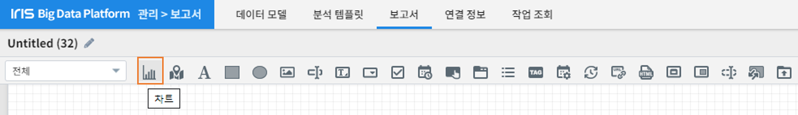차트 객체는 요청한 데이터로 각종 차트를 구성하여 시각화할 수 있습니다.
시각화 설정¶
시각화 설정에서는 차트의 스타일이나 시각화 방법 등에 대한 설정을 할 수 있습니다.
시각화 유형¶
데이터를 표현하고자 하는 차트를 선택할 수 있습니다.

| 차트 | 설명 |
|---|---|
| 테이블 | 데이터를 테이블 형태로 보여 줍니다. |
| 꺾은선형 | 데이터를 Line 차트 형태로 보여 줍니다. |
| 다중축 | 데이터를 다 중축 혼합형(세로막대형, 꺾은선형) 차트 형태로 보여 줍니다. |
| 세로막대형 | 데이터를 Column 차트 형태로 보여 줍니다. |
| 가로막대형 | 데이터를 Bar 차트 형태로 보여 줍니다. |
| 시계열 분포 | 데이터를 Scatter 차트 형태로 보여 줍니다. |
| 모션 | 데이터를 Motion 차트 형태로 보여 줍니다. |
| Sankey | 데이터를 Sankey 차트 형태로 보여줍니다. |
| 원형 | 데이터를 Pie 차트 형태로 보여 줍니다. |
| 히트맵 | 데이터를 Heat Map 차트 형태로 보여 줍니다. |
| 단일값 | 데이터를 값 하나의 형태로 보여 줍니다. |
| Gauge | 데이터를 Gauge 차트 형태로 보여 줍니다. |
| 트리맵 | 데이터를 Tree Map 차트 형태로 보여 줍니다. |
| 워드클라우드 | 데이터를 Word Cloud 차트 형태로 보여 줍니다. |
시각화 옵션¶
차트를 그리기 위한 옵션들을 설정할 수 있습니다.
일반

| 옵션 명 | 설명 |
|---|---|
| 행번호 | 테이블에서 행 번호 추가할지 여부 및 행 번호 컬럼의 이름을 설정합니다. |
| 필터 | 테이블에서 필터를 표시할지 안 할지를 설정합니다. |
| 목록 개수 | 테이블에서 데이터를 한 번에 몇 행까지 보여 줄지 여부 및 목록 개수를 설정할 수 있는 Select Box를 보여 줄지를 설정합니다. |
| 막대형 스택모드 | 막대형 차트에서 사용되며, 끄기는 Bar 생성 개수가 컬럼수만큼 증가하고, 스택형은 하나의 Bar에 모든 컬럼 데이터를 표시하며, 풀스택형은 하나의 Bar에 100% 비율로 모든 컬럼의 데이터의 비율을 보여줍니다. |
| 꺾은선형 Null 값 | 꺾은선형 차트에서 데이터의 null 값이 있으면 표시할지를 설정합니다. |
| 데이터 값 표시 | 차트에 데이터값을 표시할지를 설정합니다. |
| 배경 색상 | 히트맵 차트에서 데이터에 대한 기준 색을 설정합니다. |
| 글꼴 | 단일 값 차트에서 글꼴을 설정합니다. |
| 글자 색상 | 단일 값 차트에서 글자 색상을 설정합니다. |
| 글자 크기 | 단일 값 차트에서 글자 크기를 설정합니다. |
| 스타일 | 단일 값 차트에서 글자의 스타일을 설정합니다. |
| 다운로드 버튼 | 다운로드 버튼을 표시할지를 설정합니다. |
| 상세보기 버튼 | 상세보기 버튼을 표시할지를 설정합니다 |
| 테이블 크기 | 테이블 컬럼 크기를 객체 영역의 크기 기준으로 동일하게 맞출지를 설정합니다. |
헤더

| 옵션 명 | 설명 |
|---|---|
| 설정 | 테이블에서 모든 헤더를 일괄 설정할지를 설정할 수 있으며, 일괄 설정 모드일 경우 체크 박스가 활성화되고 체크 박스를 체크하면 개별 설정을 할 수 있습니다. |
| 행번호 | 테이블에서 헤더의 순서를 설정합니다. |
| 넓이 | 테이블에서 열의 넓이를 설정할 수 있으며, 일괄 설정 모드가 아닌 거나 일괄 설정 모드이고 개별 설정이 체크되면 넓이를 설정할 수 있습니다. |
| 정렬 | 테이블에서 헤더의 정렬을 설정할 수 있으며, 일괄 설정 모드가 아닌 거나 일괄 설정 모드이고 개별 설정이 체크되면 넓이를 설정할 수 있습니다. |
열
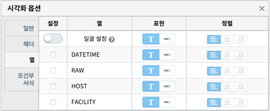| 옵션 명 | 설명 |
|---|---|
| 설정 | 테이블에서 모든 열을 일괄 설정할지를 설정할 수 있으며, 일괄 설정을 모드일 경우 체크 박스가 활성화되고 체크 박스를 체크하면 개별 설정을 할 수 있습니다. |
| 표현 | 테이블에서 데이터를 Progress Bar로 표시할지를 설정할 수 있으며, 일괄 설정 모드가 아닌 거나 일괄 설정 모드이고 개별 설정이 체크되면 넓이를 설정할 수 있습니다. |
| 정렬 | 테이블에서 열의 정렬을 설정할 수 있으며, 일괄 설정 모드가 아닌 거나 일괄 설정 모드이고 개별 설정이 체크되면 넓이를 설정할 수 있습니다. |
조건부 서식

| 옵션 명 | 설명 |
|---|---|
| 새 규칙 추가 | 테이블에서 테이터를 이용하여 색상을 변경할 수 있는 규칙을 추가합니다. |
| 필드에 적용 | 테이블에서 규칙을 추가하기 위한 필드를 설정합니다. |
| 값 | 테이블에서 규칙에 대한 값을 설정합니다. |
| 서식 | 테이블에서 규칙에 대한 색상을 설정합니다. |
X축

| 옵션 명 | 설명 |
|---|---|
| 축 | 차트에서 X축을 표시할지를 설정합니다. |
| 축 제목 | 차트에서 표시할 X축의 제목을 설정합니다. |
| 간격 | 차트에서 표시할 X축의 간격을 설정합니다. |
| 최소값 | 차트에서 표시할 X축 데이터의 최솟값을 설정합니다. |
| 최대값 | 차트에서 표시할 X축 데이터의 최댓값을 설정합니다. |
| 레이블 회전 | 차트에서 X축의 값을 회전할 수 있습니다. |
| 정렬 | 히트맵 차트에서 X축의 값을 정렬할 수 있습니다. |
Y축

| 옵션 명 | 설명 |
|---|---|
| Y축 추가 | 다 중축 차트에서 Y축을 새로 추가할 수 있습니다. |
| 축 | 차트에서 Y축을 표시할지를 설정합니다. |
| 축 제목 | 차트에서 표시할 Y축의 제목을 설정합니다. |
| 간격 | 차트에서 표시할 Y축의 간격을 설정합니다. |
| 최소값 | 차트에서 표시할 Y축 데이터의 최솟값을 설정합니다. |
| 최대값 | 차트에서 표시할 Y축 데이터의 최댓값을 설정합니다. |
| 차트 유형 | 다 중축 차트에서 Y축을 추가할 때 차트 유형을 설정합니다. |
| 레이블 회면 | 차트에서 Y축의 값을 회전할 수 있습니다. |
범례
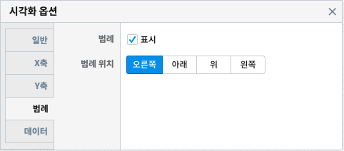| 옵션 명 | 설명 |
|---|---|
| 범례 | 차트에서 범례를 표시할지를 설정합니다. |
| 범례 위치 | 차트에서 표시할 범례의 위치를 설정합니다. |
크기
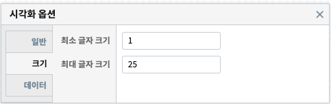| 옵션 명 | 설명 |
|---|---|
| 최소 크기 | 원형 차트에서 조각의 최소 크기를 설정합니다. |
| 최소 글자 크기 | 워드 클라우드 차트에서 최소 글자 크기를 설정합니다. |
| 최대 글자 크기 | 워드 클라우드 차트에서 최대 글자 크기를 설정합니다. |
정렬
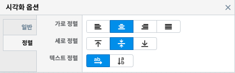| 옵션 명 | 설명 |
|---|---|
| 가로 정렬 | 단일 값 차트에서 단일 값의 가로 정렬을 설정합니다. |
| 세로 정렬 | 단일 값 차트에서 단일 값의 세로 정렬을 설정합니다. |
| 텍스트 정렬 | 단일 값 차트에서 텍스트를 가로로 표시할 건지 세로로 표시할 건지 설정합니다. |
데이터

| 옵션 명 | 설명 |
|---|---|
| X축 | 차트에서 X축에 표시할 데이터 컬럼을 설정합니다. |
| Y축 | 차트에서 Y축에 표시할 데이터 컬럼을 설정합니다. |
| 시간 | 모션 차트에서 시간을 표시할 데이터 컬럼을 설정합니다. |
| 그룹 | 모션 차트에서 데이터를 차트에 표시할 데이터 컬럼을 설정합니다. |
| 크기 | 모션 차트에서 값의 크기의 데이터 컬럼을 설정합니다. |
| 값 | 차트에서 값을 표시할 데이터 컬럼을 설정합니다. |
| 키 값 | 워드칼라우드에서 값을 표시할 데이터 컬럼을 설정합니다. |
| 가중치 | 워드클라우드에서 글자 크기의 테이터 컬럼을 설정합니다. |
지도(Map)¶

지도 객체는 요청한 지리정보(Geospatial information)를 활용하여 지도상에 정보를 시각화 할 수 있습니다.
지도 설정¶

레이어 관리¶
레이어를 추가 및 삭제를 할 수 있습니다.

| 옵션 명 | 설명 |
|---|---|
| 새 레이어 | 한 지도에 여러 개의 레이어를 생성할 수 있어 레이어를 추가할 수 있습니다. |
| 모두 삭제 | 생성한 레이어를 모두 삭제합니다. |
| 순서 | 레이어의 순서를 설정합니다. |
| 이름 | 레이어의 이름을 설정합니다. |
| 표시 | 레이어를 지도에 표시할지를 설정합니다. |
| 삭제 | 레이어를 삭제합니다. |
| 레이어 보기/숨기기 | 지도에서 레이어 표시 아이콘 표시할지 안 할지를 설정합니다. |


레이어 설정¶
시각화 설정¶
시각화 설정에서는 레이어의 스타일이나 시각화 방법 등에 대한 설정을 할 수 있습니다.
시각화 유형¶
사용할 레이어를 선택할 수 있습니다.
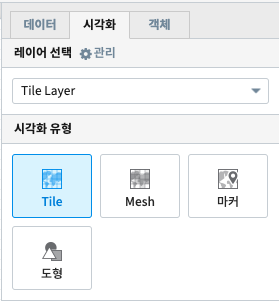| 종류 | 설명 |
|---|---|
| Tile | 지도에 Tile Code를 이용한 Layer를 선택합니다. |
| Mash | 지도에 Mash Code를 이용한 Layer를 선택합니다. |
| 마커 | 지도에 Point 및 Flag Layer를 선택합니다. |
| 도형 | 지도에 polygon Layer를 선택합니다. |
시각화 옵션¶
Map의 옵션을 설정할 수 있습니다.
Grid
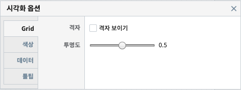| 옵션 명 | 설명 |
|---|---|
| 격자 | Tile 및 Mash에서 격자가 보이거나 안 보이도록 설정합니다. |
| 투명도 | Layer의 투명도를 설정합니다. |
마커

| 옵션 명 | 설명 |
|---|---|
| 마커 종류 | 포인트 및 깃발을 설정합니다. |
| 최대 개수 | 마커 최대 개수를 설정합니다. |
| 크기 | 마커 크기를 설정합니다. |
도형
도형의 투명도를 설정합니다

색상

| 옵션 명 | 설명 |
|---|---|
| 설정 방식 | 그라디언트, 임계치, 객체별 자동 3가지 설정이 가능하며 각각 데이터의 값으로 Layer에 색을 추가 추가하는 방식입니다. |
| 최소값 색상 | 그라디언트에서 데이터값이 최솟값일 때 어떠한 색으로 표현할지 설정합니다. |
| 최대값 색상 | 그라디언트에서 데이터값이 최댓값일 때 어떠한 색으로 표현할지 설정합니다. |
| 구간 설정 | 임계치에서 값의 구간마다 색을 설정합니다. |
| 범례 | Layer에 범례를 표시할지 안 할지를 설정합니다. |
데이터
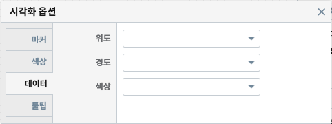| 옵션 명 | 설명 |
|---|---|
| Tilecode | Tile에서 Tile을 그리기 위한 데이터의 컬럼을 설정합니다. |
| Meshcode | Mesh에서 Mesh를 그리기 위한 데이터의 컬럼을 설정합니다. |
| 위도 | 마커에서 위도의 데이터 컬럼을 설정합니다. |
| 경도 | 마커에서 경도의 데이터 컬럼을 설정합니다. |
| 꼭짓점 좌표 | 도형에서 도형을 그리기 위한 데이터 컬럼을 설정합니다. |
| 색상 | 색상을 표현할 데이터 컬럼을 설정합니다. |
튤팁
튤팁에 표시할 데이터의 컬럼을 설정합니다.

라벨(Label)¶
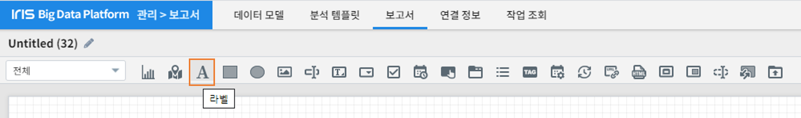


이미지(Image)¶
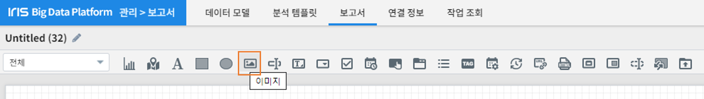이미지 객체는 파일 또는 URL을 이용하여 이미지를 불러와 시각화할 수 있습니다.


텍스트 입력(Input Box)¶
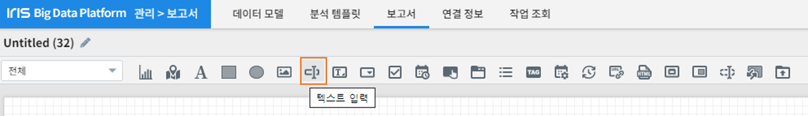텍스트 입력 객체는 Input Box에 사용자가 입력하거나 외부로부터 값을 받아 화면에 보여 줍니다.

텍스트 상자(Text Area)¶
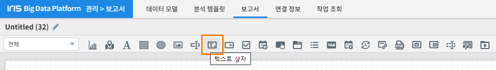텍스트 상자 객체는 Text Area에 사용자가 입력하거나 외부로부터 값을 받아 화면에 보여 줍니다.

콤보박스 (Combo Box)¶

사용자가 드롭다운 목록에서 한 항목을 선택할 수 있고, 목록은 ‘데이터’ 탭과 ‘사용자 정의’로 설정할 수 있습니다. 항목 탭을 사용하여, 변수명을 통해 콤보박스 목록에서 변수명에 정의된 값을 이벤트 트리거 옵션에 의해 원하는 항목을 자동 선택할 수 있습니다.
데이터 설정¶
데이터 설정은 데이터 탭(공통) 을 참고하시면 됩니다.
사용자 정의¶
사용자 정의 데이터 목록을 작성 할 수 있고, 1개 이상의 목록을 작성 할 경우, 추가 버튼을 클릭하여 데이터를 추가 할 수 있습니다.

| 항목 | 설명 |
|---|---|
| 항목 | 목록에 보여지는 텍스트 설정 입니다. |
| 값 | 항목(텍스트)에 대응되는 데이터 값 입니다. |
시각화 설정¶
시각화 설정에서는 콤보박스의 스타일이나 시각화 방법 등에 대한 설정을 할 수 있습니다.
이벤트 값 전달 설정¶
이벤트 값 전달 설정(공통) 을 참고하시면 됩니다.


디폴트 값 선택¶
조회된 목록 중에 디폴트 값을 설정 할 수 있습니다.
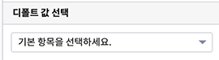| 항목 | 설명 |
|---|---|
| 미선택 | 콤보박스 디폴트 값을 설정하지 않습니다. |
| 직접입력 | 콤보박스 디폴트 값을 직접 입력하여 설정합니다. |
트리거 설정 확인¶
트리거 설정(공통) 을 참고하시면 됩니다.
항목¶
콤보박스의 변수명을 설정해 변수명의 데이터 값으로 콤보박스의 목록의 값을 찾아 자동으로 선택해 주는 기능 입니다.
데이터 실행방법 설정¶
데이터 실행방법 설정은 트리거 설정(공통) 을 참고하시면 됩니다.
체크박스/라디오버튼 (Check Box / Radio Button)¶

체크박스/라디오버튼 객체로 전환 설정 가능합니다. 유형을 선택하여, 객체의 속성을 변경할 수 있고, 체크박스가 기본값 입니다.
데이터 설정¶
데이터 설정은 데이터 탭(공통) 을 참고하시면 됩니다.
사용자 정의¶
사용자 정의 데이터 목록을 작성 할 수 있고, 1개 이상의 목록을 작성 할 경우, 추가 버튼을 클릭하여 데이터를 추가 할 수 있습니다.
트리거 설정 확인¶
트리거 설정(공통) 을 참고하시면 됩니다.
속성¶
체크박스/라디오버튼 스타일이나 시각화 방법 등에 대한 설정을 할 수 있습니다.
이벤트 값 전달 설정¶
이벤트 발생시 정의한 설정값을 전달 합니다.
| 항목 | 설명 |
|---|---|
| 변수명 | 오브젝트의 변수명 할당합니다. |
| 구분자 입력 | 목록 데이터 구분자를 설정합니다. |
| 텍스트 한정자 | 목록 데이터의 텍스트 한정자를 설정합니다. (예: ‘data1’, “data1”) |
유형 선택¶
체크박스/라디오버튼 유형을 선택 합니다.

| 항목 | 설명 |
|---|---|
| Check Box | 화면에 보이는 UI를 체크박스로 설정합니다. |
| Radio Button | 화면에 보이는 UI를 라디오버튼으로 설정합니다. |
디폴트 값 선택¶
조회된 목록 중에 디폴트 값을 설정 할 수 있습니다.

| 항목 | 설명 |
|---|---|
| 미선택 | 콤보박스 디폴트 값을 설정하지 않습니다. |
| 전체선택 | 콤보박스 디폴트 값을 직접 입력하여 설정합니다. |
날짜/시간 선택(Date / Time Picker)¶

날짜 선택 시 달력으로 시작/종료/현재 날짜를 설정할 수 있고, 시간 선택 시 시작 시간 & 시간 간격을 설정 할 수 있습니다.
속성¶
날짜/시간의 시각화 방법 등에 대한 설정을 할 수 있습니다.
데이터 유형 설정¶
데이터 유형 설정 데이터 유형 설정(공통) 을 참고하시면 됩니다.
날짜/시간 유형 선택¶
날짜/시간에 대한 유형선택으로 시각화 옵션이 달라 집니다.

| 항목 | 설명 |
|---|---|
| 날짜 | 달력 표시 날짜/초기 날짜 설정을 할 수 있습니다. |
| 시간 | 시간 선택 간격/초기 시간 설정을 할 수 있습니다. |
달력 표시 날짜 설정¶
날짜 유형을 선택한 경우에만 활성화 되며, 달력 표시 날짜를 설정합니다.

| 항목 | 설명 |
|---|---|
| 사용여부 | 선택 시 시작/종료 날짜를 설정 가능하지만, 미선택 시 시작/종료 날짜를 설정할 수 없습니다. |
| 시작 날짜 | 시작 날짜를 선택 합니다. |
| 종료 날짜 | 종료 날짜를 선택 합니다. |
| 현재 날짜 | 기본값은 미선택이며, 선택 시 종료 날짜는 설정할 수 없고, 현재 날짜로 종료 날짜가 설정 됩니다. |
초기 날짜 설정¶
날짜 유형을 선택한 경우에만 활성화 되며, 초기 날짜를 설정합니다.
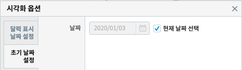| 항목 | 설명 |
|---|---|
| 현재 날짜 선택 | 기본값은 선택이며, 현재 날짜로 초기 날짜를 설정합니다. 미선택 시 초기날짜를 설정 할 수 있습니다. |
| 날짜 | 현재 날짜 선택이 미선택 시 설정 가능하며, 선택 시에는 날짜가 비 활성화 됩니다. |
초기 시간 설정¶
시간 유형을 선택한 경우에만 활성화 되며, 초기 시간을 설정합니다.
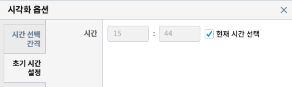| 항목 | 설명 |
|---|---|
| 현재 시간 선택 | 기본값은 선택이며, 현재 시간으로 초기 시간을 설정합니다. 미선택 시 초기 시간을 설정 할 수 있습니다. |
| 분 | 분을 설정합니다. |
| 초 | 초를 설정합니다. |
트리거 설정 확인¶
트리거 설정(공통) 을 참고하시면 됩니다.
버튼 (Button)¶

사용자가 버튼명 문구를 설정할 수 있고, 버튼을 클릭하여 이벤트 트리거/하이퍼링크 기능을 설정 할 수 있습니다.
속성¶
버튼의 시각화 방법 등에 대한 설정을 할 수 있습니다.
이벤트 값 전달 설정¶
이벤트 값 전달 설정(공통) 을 참고하시면 됩니다.

하이퍼링크¶
하이퍼링크를 버튼에 설정 할 수 있습니다.
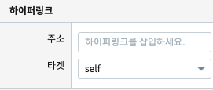| 항목 | 설명 |
|---|---|
| 주소 | 하이퍼링크 주소를 입력 합니다. |
| 타겟 | 하이퍼링크 타겟은 self, blank로 설정 할 수 있습니다. |
트리거 설정 확인¶
트리거 설정(공통) 을 참고하시면 됩니다.
탭 (Tab)¶

보고서에 탭을 1개 이상 추가 할 수 있고, 탭 방향 및 해당 탭이 선택되었을 때 나타날 비주얼 객체를 설정할 수 있습니다.
데이터¶
탭 목록의 데이터 유형을 설정합니다.
데이터 유형 설정¶
데이터 목록을 작성 할 수 있고, 1개 이상의 목록을 작성 할 경우, 추가 버튼을 클릭하여 데이터를 추가 할 수 있습니다.

| 항목 | 설명 |
|---|---|
| 탭 이름 | 표시될 탭이름을 입력 합니다. |
| 탭 값 | 탭 값을 입력 합니다. |
속성¶
탭의 스타일이나 시각화 방법 등에 대한 설정을 할 수 있습니다.
이벤트 값 전달 설정¶
이벤트 값 전달 설정(공통) 을 참고하시면 됩니다.
트리거 설정 확인¶
트리거 설정(공통) 을 참고하시면 됩니다.
적용 대상¶
데이터 유형에서 설정한 탭 목록이 나타나며, 해당 항목의 아래방향 아이콘을 선택하여 표시 할 비주얼 객체를 설정 할 수 있습니다.
첫번째 탭 적용 대상 설정 입니다.

첫번째 탭 적용 대상 UI 입니다.

두번째 탭 적용 대상 설정 입니다.
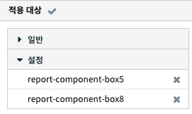두번째 탭 적용 대상 UI 입니다.

자동 전환¶
1개 이상의 탭이 설정된 경우, 탭이 자동으로 전환되도록 설정 할 수 있습니다.

| 항목 | 설명 |
|---|---|
| 사용 여부 | 기본값은 미사용 입니다. 사용으로 선택 한 경우 탭이 자동 전환 됩니다. |
| 사용 간격 | 기본값은 1초 이며, 입력한 값의 초 단위로 탭이 자동 전환 됩니다. |
목록(List)¶

목록 객체는 검색, 선택 가능한 목록을 추가 할 수 있습니다. 리스트 제목 & 목록으로 나타날 데이터 필드를 설정하여 나타낼 수 있습니다.
시각화 설정¶
목록의 스타일이나 시각화 방법 등에 대한 설정을 할 수 있습니다.

이벤트 값 전달 설정¶
이벤트 값 전달 설정(공통) 을 참고하시면 됩니다.
트리거 설정 확인¶
트리거 설정(공통) 을 참고하시면 됩니다.
태그 목록 (Tag List)¶
태그 목록을 데이터 설정하여 시각화를 통해 목록을 표시 할 수 있습니다.
데이터 설정¶
데이터 설정은 데이터 탭(공통) 을 참고하시면 됩니다.
사용자 정의¶
데이터 목록을 작성 할 수 있고, 1개 이상의 목록을 작성 할 경우, 추가 버튼을 클릭하여 데이터를 추가 할 수 있습니다.
| 항목 | 설명 |
|---|---|
| 항목 | 목록에 보여지는 텍스트 설정 입니다. |
| 값 | 항목(텍스트)에 대응되는 데이터 값 입니다. |
속성¶
스타일이나 시각화 방법 등에 대한 설정을 할 수 있습니다.
이벤트 값 전달 설정¶
이벤트 발생시 정의한 설정값을 전달 합니다.
| 항목 | 설명 |
|---|---|
| 변수명 | 오브젝트의 변수명 할당합니다. |
| 구분자 입력 | 태그 목록 데이터 구분자를 설정합니다. |
| 텍스트 한정자 | 태그 목록 데이터의 텍스트 한정자를 설정합니다. (예: ‘data1’, “data1”) |
트리거 설정 확인¶
트리거 설정(공통) 을 참고하시면 됩니다.

태그 목록의 선택기능 사용여부¶
태그 목록을 토글 형태로 선택할 수 있는 기능을 설정할 수 있습니다.

| 항목 | 설명 |
|---|---|
| 사용 | 기본값은 사용 입니다. 사용을 선택한 경우 태그 목록을 토글 형태로 선택할 수 있습니다. |
| 미사용 | 미사용 시 태그 목록을 토글 형태로 선택할 수 없습니다. |
데이터모델 일괄 설정(Data Model Batch Setting)¶
데이터모델 사용한 객체들의 시간을 일괄 설정 할 수 있습니다.

주기설정 (Period Setting)¶
보고서의 데이터 갱신 주기를 설정 할 수 있습니다.
데이터¶
주기/기본 설정을 할 수 있습니다.

주기 설정¶
보고서 갱신 주기를 설정은 1개 이상 주기를 추가 해야 하며, 초/분/시간 단위로 추가 할 수 있습니다.
| 항목 | 설명 |
|---|---|
| 다음 갱신까지 남은 시간 표시 | 기본값은 미선택 입니다. 선택 시 다음 갱신까지 남은 시간이 시분초(00:00:00)로 표시 됩니다. |
| 시간 입력 | 초/분/시간 단위로 시간을 입력 할 수 있습니다. |
기본 주기¶
주기 설정에서 추가한 주기 목록 중 기본 주기로 실행될 주기를 선택할 수 있습니다.

기본 주기로 설정한 항목이 표시되어 실행되며, 주기 설정에 추가한 다른 주기는 콤보박스로 선택할 수 있습니다.

외부 URL (External URL)¶

외부 URL을 입력하여 해당 URL 페이지를 로딩 할 수 있습니다.
데이터¶
URL 설정과 데이터 실행 방법을 설정 할 수 있습니다.
URL 불러오기¶
http 포함된 URL을 입력하거나, 다른 객체의 변수명을 입력하여 변수값을 사용해 외부URL 페이지를 로딩 할 수 있습니다.

| 항목 | 설명 |
|---|---|
| 적용 | 입력한 외부 URL의 유효성 검사를 합니다. http로 시작해야 하고 URL에 공백이 있으면 설정되지 않습니다. |
| 미리보기 | 외부 URL에 변수명을 입력한 경우, 해당 변수 값의 데이터를 미리 보기 합니다. |
데이터 실행방법 설정¶
데이터 실행방법 설정은 트리거 설정(공통) 을 참고하시면 됩니다.


보고서 가져오기(팝업) (Import Report (Popup))¶

저장된 보고서를 가져와 팝업 화면에 표시하는 객체입니다. (저장된 보고서를 가져올 경우, 가져온 보고서의 객체 목록 중에 팝업/포틀릿 객체가 포함되어 있는 경우, 미리 보기에서 실행되지 않습니다.)
불러오기¶
저장된 보고서 목록을 선택하여 불러올 수 있습니다.
보고서 설정 유형¶
저장된 보고서 목록이 기본이며, 변수/값 입력을 설정 할 수 있습니다.

| 항목 | 설명 |
|---|---|
| 목록 선택 | 저장된 보고서 목록을 선택할 수 있습니다. |
| 변수/값 입력 | 변수값을 사용하여 저장된 보고서를 불러 올 수 있습니다. |
저장된 보고서¶
보고서 설정 유형에서 목록을 선택한 경우만 활성화 됩니다. 검색을 통해 보고서를 검색가능하며, 보고서 선택 시 목록에 표시되고, 팝업 객체에 보고서 이름과 바로가기 나타납니다.
팝업 객체의 선택 적용 UI 입니다.

팝업 열기 설정¶
팝업 열기 시, 실행될 이벤트를 설정합니다.

| 항목 | 설명 |
|---|---|
| 트리거 설정(공통) 을 참고하시면 됩니다.” | |
| 자동실행 | 선택 시 팝업 버튼을 클릭하지 않고, 팝업을 자동으로 실행 합니다. |
속성¶
스타일이나 시각화 방법 등에 대한 설정을 할 수 있습니다.
이벤트 값 전달 설정¶
이벤트 값 전달 설정(공통) 을 참고하시면 됩니다.
변수 설정¶
저장된 보고서의 Canvas 변수가 설정된 경우에 설정된 Canvas 변수값에 값을 설정 할 수 있습니다. Canvas 변수가 3개인 경우에 변수값을 3개 설정 할 수 있으며, 변수값을 직접 입력 하거나, 변수명을 입력하여 설정 할 수 있습니다.

| 항목 | 설명 |
|---|---|
| 변수명 | 저장된 보고서의 Canvas 변수명 입니다. |
| 변수 값 | 저장된 보고서의 Canvas 변수값을 직접 설정가능하며, 변수명을 입력한 설정도 가능합니다. |


보고서 가져오기(포틀릿) (Import Report (Portlet))¶

저장된 보고서를 가져와 보고서 화면에 표시하는 객체입니다. (저장된 보고서를 가져올 경우, 가져온 보고서의 객체 목록 중에 팝업/포틀릿 객체가 포함되어 있는 경우, 미리 보기에서 실행되지 않습니다.)
불러오기¶
저장된 보고서 목록을 선택하여 불러올 수 있습니다.
보고서 설정 유형¶
저장된 보고서 목록이 기본이며, 변수/값 입력을 설정 할 수 있습니다.
| 항목 | 설명 |
|---|---|
| 목록 선택 | 저장된 보고서 목록을 선택할 수 있습니다. |
| 변수/값 입력 | 변수값을 사용하여 저장된 보고서를 불러 올 수 있습니다. |
저장된 보고서¶
보고서 설정 유형에서 목록을 선택한 경우만 활성화 됩니다. 검색을 통해 보고서를 검색가능하며, 보고서 선택 시 목록에 표시되고, 팝업 객체에 보고서 이름과 바로가기 나타납니다.
포틀릿 객체의 선택 적용 UI 입니다.
Import 보고서 실행 방법 설정¶
포틀릿 실행 시, 실행될 이벤트를 설정합니다.

| 항목 | 설명 |
|---|---|
| 트리거 설정(공통) 을 참고하시면 됩니다.” | |
| 자동실행 | 선택 시 팝업 버튼을 클릭하지 않고, 팝업을 자동으로 실행 합니다. |
속성¶
스타일이나 시각화 방법 등에 대한 설정을 할 수 있습니다.
이벤트 값 전달 설정¶
이벤트 값 전달 설정(공통) 을 참고하시면 됩니다.
변수 설정¶
저장된 보고서의 Canvas 변수가 설정된 경우에 설정된 Canvas 변수값에 값을 설정 할 수 있습니다. Canvas 변수가 3개인 경우에 변수값을 3개 설정 할 수 있으며, 변수값을 직접 입력 하거나, 변수명을 입력하여 설정 할 수 있습니다.
| 항목 | 설명 |
|---|---|
| 변수명 | 저장된 보고서의 Canvas 변수명 입니다. |
| 변수 값 | 저장된 보고서의 Canvas 변수값을 직접 설정가능하며, 변수명을 입력한 설정도 가능합니다. |


{kind=link}
{kind=link}
{kind=link}
{kind=link}
{kind=link}
{kind=link}
{kind=link}
{kind=link}
{kind=link}
{kind=link}
{kind=link}
{kind=link}
{kind=link}
{kind=link}
{kind=link}
{kind=link}
{kind=link}
{kind=link}
{kind=link}
{kind=link}
{kind=link}
{kind=link}
{kind=link}
{kind=link}
{kind=link}
{kind=link}
{kind=link}
{kind=link}
{kind=link}
{kind=link}
{kind=link}
{kind=link}
{kind=link}
{kind=link}
{kind=link}
{kind=link}
{kind=link}
{kind=link}
{kind=link}
{kind=link}
{kind=link}
{kind=link}
{kind=link}
{kind=link}
{kind=link}
{kind=link}
{kind=link}
{kind=link}
{kind=link}
{kind=link}
RESTful API(REST ful API)¶

RESTful API를 사용하여 데이터를 설정 할 수 있는 객체입니다.
데이터¶
데이터 설정을 통해 조회할 RESTful API 설정합니다.
데이터 설정¶
RESTful API의 Method, URI, Header Body를 설정합니다.

| 항목 | 설명 |
|---|---|
| Method | POST 로 고정되어 있습니다. |
| URI | 업로드할 REST API URI 입력 입니다. |
| Header | 전달할 Header(JSON 포맷) 값을 정의하여 전송 할 수 있으며, 변수명을 입력하여 설정 할 수 있습니다. |
| Body | 전달할 Body(JSON 포맷) 값을 정의하여 전송 할 수 있으며, 변수명을 입력하여 설정 할 수 있습니다. |
데이터 실행방법 설정¶
데이터 실행방법 설정은 트리거 설정(공통) 을 참고하시면 됩니다.
속성¶
스타일이나 시각화 방법 등에 대한 설정을 할 수 있습니다.
이벤트 값 전달 설정¶
이벤트 값 전달 설정(공통) 을 참고하시면 됩니다.
트리거 설정 확인¶
트리거 설정(공통) 을 참고하시면 됩니다.
파일 업로드 (File Upload)¶
파일 업로드 객체는 보고서에 데이터 추가 시, 정해진 형태의 파일을 REST API로 데이터를 업로드 할 수 있습니다. 비주얼 객체의 이벤트에 의해 업로드 실행 트리거를 설정 할 수 있으며, 한 번에 하나의 파일만 등록 가능합니다.
데이터¶
파일 업로드 데이터를 설정합니다.
데이터 설정¶
파일 업로드 데이터의 Method, URI, Body를 설정합니다.
{kind=link}
| 항목 | 설명 |
|---|---|
| Method | POST 로 고정되어 있습니다. |
| URI | 업로드할 REST API URI 입력 입니다. |
| Body | 업로드 시 추가 파라미터(JSON 포멧)을 정의 할 수 있습니다. |
데이터 실행방법 설정¶
데이터 실행방법 설정은 트리거 설정(공통) 을 참고하시면 됩니다.
속성¶
속성탭에서 파일 업로드 업로드 가능 파일 확장자를 설정합니다.
업로드 가능 파일 확장자¶
미 설정시, 확장자 구분없이 업로드 가능하며, 확장자는 ‘.csv’ or ‘csv’ 형식으로 등록가능합니다. 하단 추가 버튼을 클릭하여 업로드 가능 파일 확장자를 1개 이상 등록할 수 있습니다.
{kind=link}
이벤트 값 전달 설정¶
이벤트 값 전달 설정(공통) 을 참고하시면 됩니다.
{kind=link}
적용된 컴포넌트 삭제 및 전체 삭제¶

보고서 이름 설정¶
{kind=link}

{kind=link}